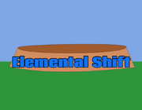
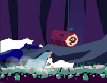
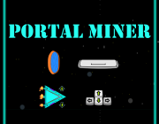
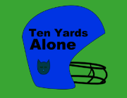

;")
 Zoom Car World 3 (in Development)
Zoom Car World 3 (in Development)
Prototype of a Racing Simulation
Working towards creating a minimum playable product by mid-October 2016 that will be a prototype or proof of concept towards working on a larger, more detailed, racing simulation. Zoom Car World 3 may have less than realistic physics but should feel somewhat similar to driving a car.
 Simulation (Double-wishbone Suspension System)
Simulation (Double-wishbone Suspension System)
Visual effect only at the moment
Linked up each component of a double-wishbone suspension system to be simulated for Zoom Car World 3, or a future racing simulation project. Created the visuals and moving the tire based on spring length, as well as computing spring length based on tire position.
More
AIRS (Artificial Intelligence in Racing Simulations)
Non-traditional AI research project using LiveForSpeed as base racing simulation.
This project is a brute-force learning playground to get an artificial driver racing in a simulated environment not using traditional methods. The driver gets the left/right edge of the track, and from their computes where the corners are and the best geometric racing line. The driver then uses a virtual controller and drives the car using a few sensors for information.
Tire Simulation (Point-mass Particle System)
Visual deformation effect only
In this project I setup a point-mass particle system connected together by various springs to create the carcass of the tire and allow it to deform visually.
 More
Turtle Brains
More
Turtle Brains
Cross-Platform C++ Game Develoment Framework
TurtleBrains is a great framework for quickly developing two-dimensional games and building simple applications, like game tools. It is written in C++ and uses OpenGL 3.2 core context for graphics and OpenAL for audio.


 Elemental Shift (LD35)
Elemental Shift (LD35)
by Tim Beaudet
Shift through the elements to fight off the endless foes that come your way, remember to be the strongest element you can be!
 Ascending Roots (LD34)
Ascending Roots (LD34)

by Tim Beaudet, Oliver, Daniel Akesson, Jeremy Bell, Toms Stals
Armed with a watering can and some water, you explore the world by controlling roots that ascend toward the heavens. Climb these roots, put out fires and be careful with water use. Maybe then you can get the magical golden watering can!

Burden (LD33)
by Tim Beaudet, Daniel Akesson, Jeremy Bell
Follow this woman's journey through her past, as she is chased by her traumatic and guilt-ridden memories of the plane crash that killed her family. She was the only survivor. The game is quite difficult, but it does have an ending.

Portal Miner (LD32)
by timbeaudet, Sonia Augier, Jeremy Bell
A mineral miner of the future, travelling to distant asteroid fields to collect resources. The slow collection process got you thinking and you unleash a weapon; the portal. The portal allows you to collect and prcess resources immediately without the long return trip. Your job is still dangerous, though, so avoid the asteroids and collect the best minerals!
 Precise Shot (LD31)
Play
Precise Shot (LD31)
Play
by timbeaudet
Target practice with the traditional bow and arrow with a bit of timing involved for power shots, but don't pull back too far or the arrow will drop!
 Feeding Time! (LD27)
Play
Feeding Time! (LD27)
Play
by timbeaudet, Sonia Augier
I worked with my lovely girlfriend who did all the art and obviously since I didn't touch the art, the game came out looking great. Gameplay was pretty fun too, although the difficulty ramped up quickly. We made five different levels, but levels 4 and 5 were difficult, although possible.Unfortunately we didn't have enough time to add a good win effect, so if you manage to beat level 5 you will start at level 1 again and continue looping.
 Cracked! (LD23)
Play
Cracked! (LD23)
Play
by timbeaudet, @joekinley
Turn based strategy/puzzle game developed with @joekinley who did all content; art, sounds and levels. With a given number of turns per day, save the kids before the world cracks into the void.

Ten Yards Alone (LD22)
by timbeaudet
During the state championship game, your team has been crushed and injured leaving you to play alone with some random training equipment. Get the first down and score a few points to grab the title.
 Escape (LD22)
Escape (LD22)
by timbeaudet
Physics based gliding game where you control a paper airplane through a short defined tunnel.
Written in C++ with a very simple framework for DirectX created prior to the event.
Copyright © 2016, Tim Beaudet